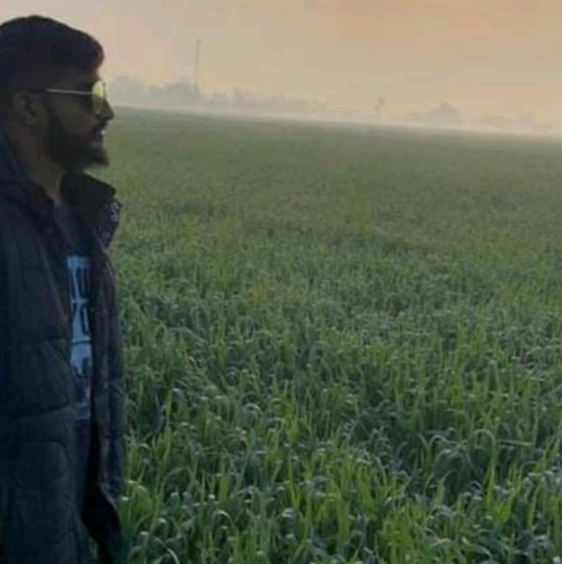

Testimonial

Purshotam
Network Eng.
Gauti conveys quality work. he is an excellent individual and an extraordinary cooperative person. he is extremely straightforward and puts all her energy to follow through on schedule.

Swami G
CEO S.Tech.
Gauti is a wonderfully creative, collaborative, and gifted developer who excels at creating inclusive digital solutions.
Ashif Zeb
Singer.
Gautam is genuinely energetic about the web and the items he makes for it and that is quite darn marvelous.